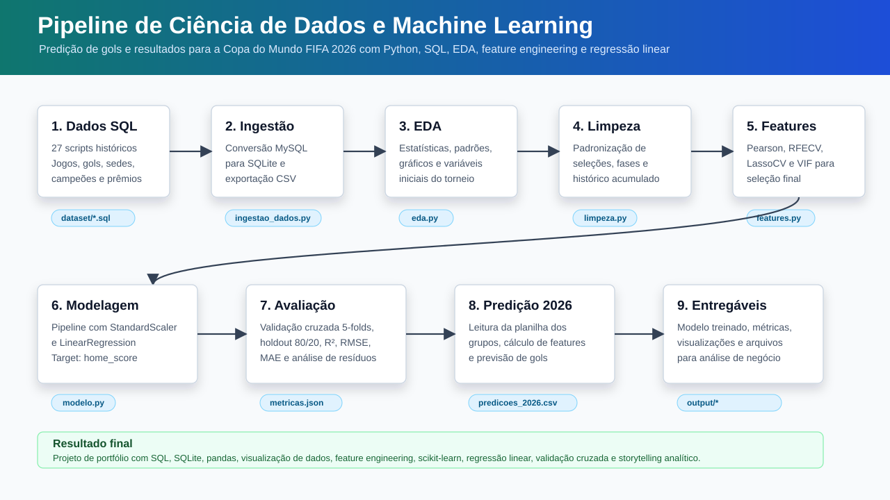
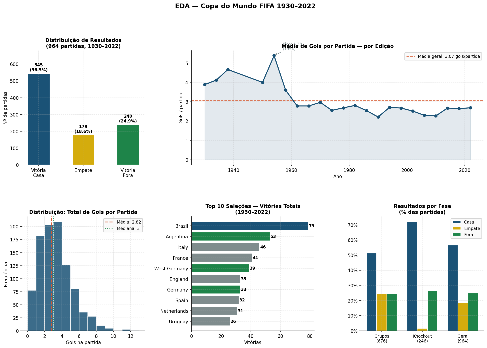
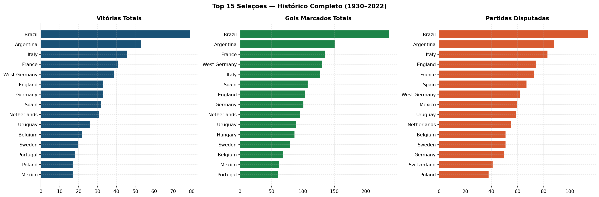
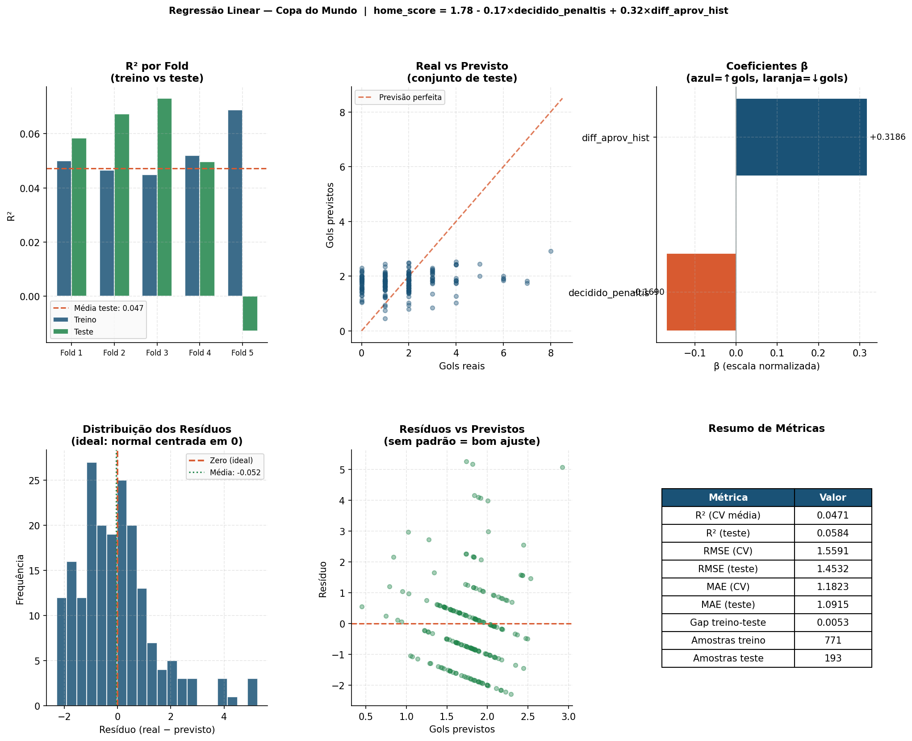

Base histórica
Jogos de Copas anteriores alimentam estatísticas de aproveitamento, gols, saldo e experiência.
Python • SQL • Machine Learning • Copa 2026
Um projeto de Ciência de Dados que usa o histórico das Copas, combina ranking FIFA e transforma tudo em (possíveis?) previsões para a fase de grupos de 2026.
01 • O problema
O objetivo não é vender certeza. O objetivo é construir uma análise reproduzível, com dados disponíveis antes do jogo, métricas e leitura dos limites do modelo.
Jogos de Copas anteriores alimentam estatísticas de aproveitamento, gols, saldo e experiência.
Cada jogo recebe o ranking mais recente disponível antes da partida, evitando informação do futuro.
A tabela oficial da fase de grupos entra no pipeline para gerar previsões por confronto.
02 • Jornada dos dados
O fluxo abaixo mostra como os dados passam por ingestão, EDA, limpeza, engenharia de variáveis, modelagem e publicação no site.

SQL histórico convertido para SQLite e CSV.
Gráficos para entender gols, vitórias, empates e seleções.
Variáveis pré-jogo com histórico, ranking e contexto da fase.
Métricas, modelos, CSV de previsões e site interativo.
03 • Exploração visual


04 • Dois modelos, duas perguntas
Regressão é uma forma de aprender padrões com números. Aqui ela aparece em dois formatos: uma para prever quantidade de gols e outra para transformar os mesmos sinais em probabilidade de vitória.
Estima home_score, ou seja, quantos gols a seleção mandante tende a marcar. Em linguagem
simples: o modelo soma os sinais das variáveis e devolve um número de gols.
Estima home_win, uma resposta binária: vence ou não vence. Em vez de placar, ela entrega
uma probabilidade entre 0% e 100%.
Gols: base + pesos das variáveis
home_score = b0 + b1*x1 + ... + erro
Vitória: probabilidade da soma dos sinais
p(home_win) = 1 / (1 + e^-z)
Resume como a seleção performou historicamente antes daquele jogo.
Compara força ofensiva, fragilidade defensiva e saldo médio das seleções.
Usa quantidade de partidas anteriores em Copas como sinal de repertório histórico.
Inclui posição e pontos do ranking disponível antes da partida.
Diferencia fase de grupos e mata-mata, porque o comportamento do jogo muda.
Variáveis conhecidas só depois da partida ficam fora para evitar vazamento de dados.
05 • Métricas em contexto
O R² baixo nos gols mostra a dificuldade de prever placar exato. A classificação de vitória fica mais estável porque responde uma pergunta menos detalhada.
Quanto da variação dos gols foi explicada pelo modelo.
Erro médio em gols, fácil de interpretar no contexto do jogo.
Capacidade de separar vitórias de não vitórias.

06 • Predições para 2026
Os gols previstos saem da regressão linear. A chance de vitória do mandante sai da regressão logística. Juntas, elas ajudam a ler o confronto por dois ângulos.
07 • Leitura final
ETL, EDA, feature engineering, seleção de variáveis, modelos, métricas e predições.
Os modelos são escolhidos conforme o tipo de pergunta: número de gols ou classe de vitória.
Comparações de modelos.